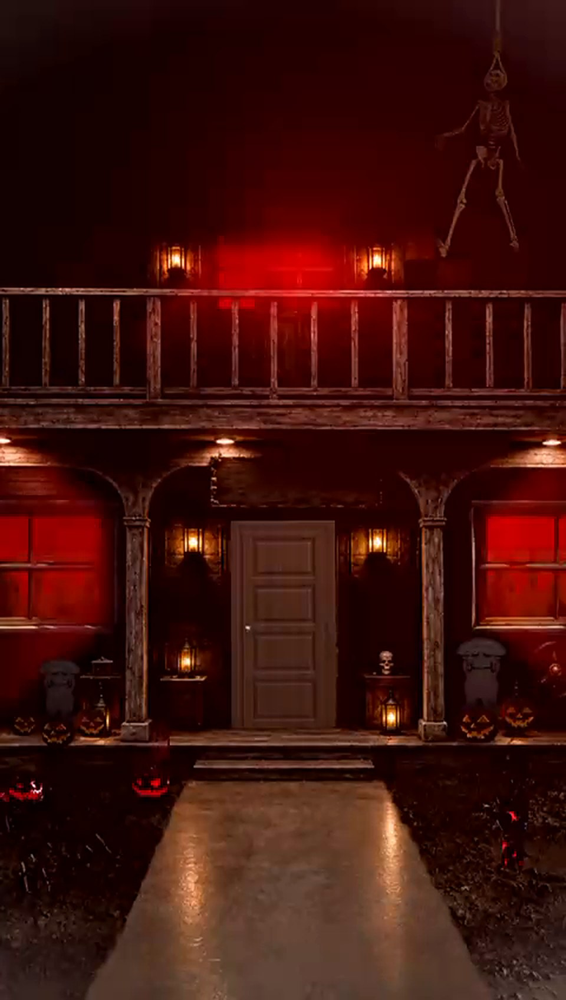

Bushwick, Brooklyn
Look long enough and it opens.
Sixty minutes inside. Multiple rooms. One way out. September 25, 2026 — and the list is how you find out first.

Bushwick, Brooklyn
Sixty minutes inside. Multiple rooms. One way out. September 25, 2026 — and the list is how you find out first.
Private waitlist
Leave your name. The house will answer when it’s ready.